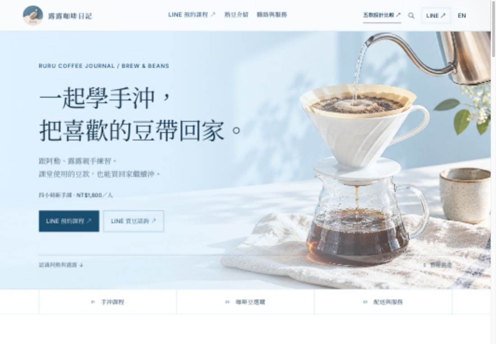
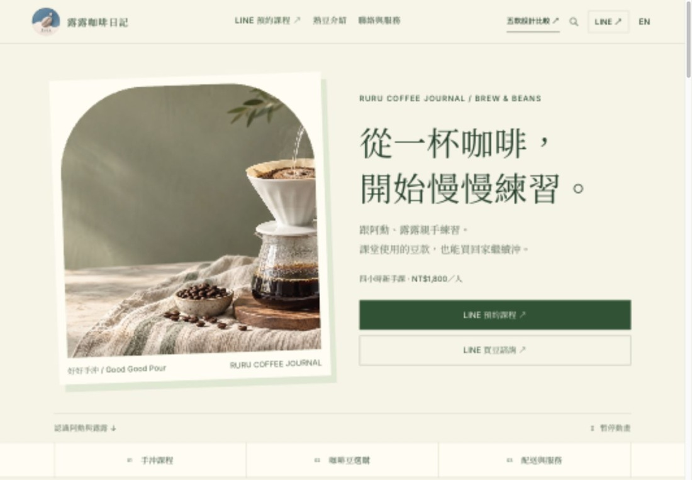
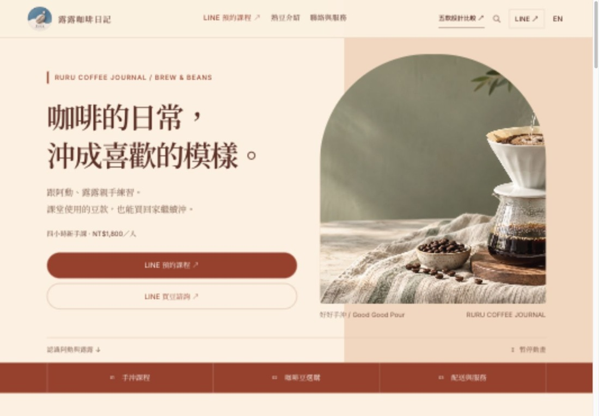
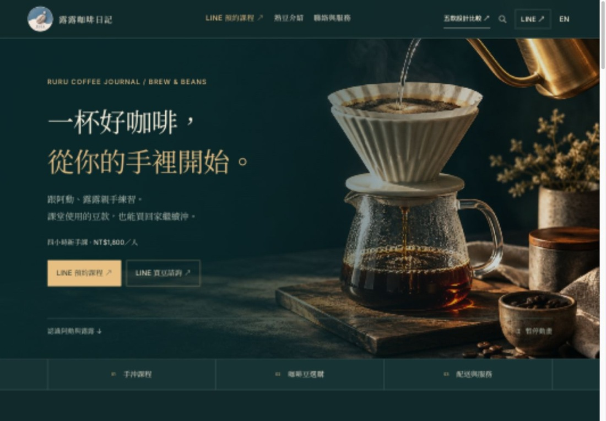
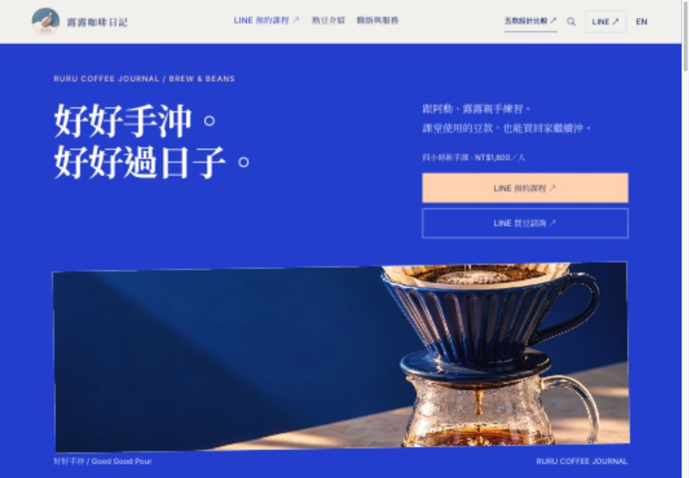

ARURU / FIVE DESIGN DIRECTIONS
同一份咖啡日常，
五種不同的表情。
放大文字，也放大風格。
五個完整版本，買豆與上課都連到 LINE OA。
正文 18–19px課程 × 精品熟豆手機也好讀

B
C
D
ERURU / FIVE DESIGN DIRECTIONS
放大文字，也放大風格。
五個完整版本，買豆與上課都連到 LINE OA。

A
B
C
D
E